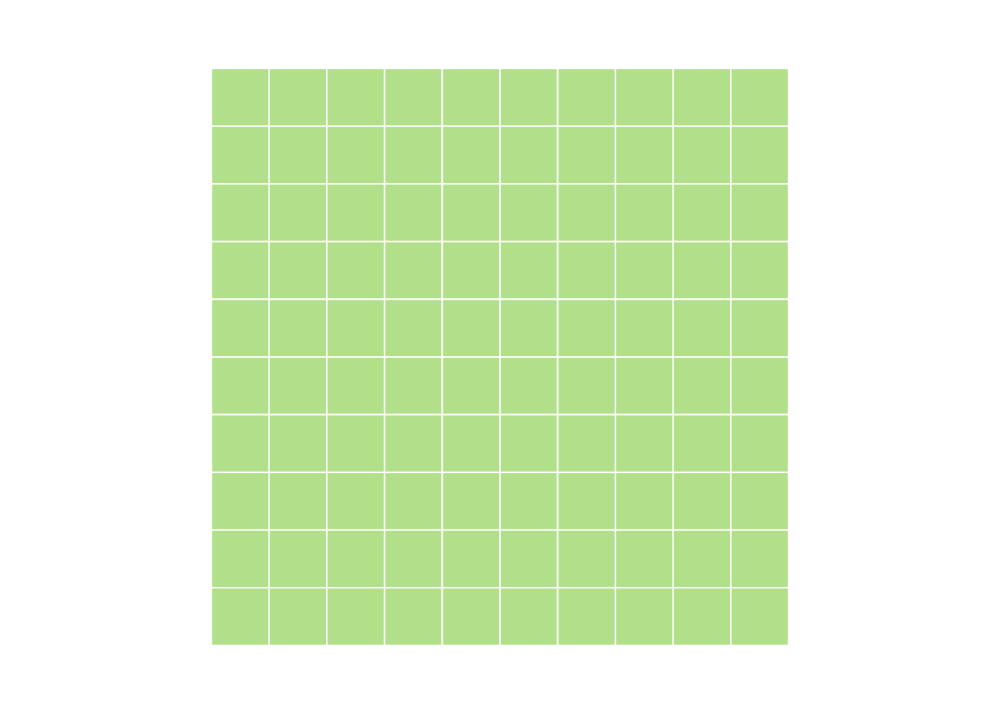

- 1 Introduction
- 2 Setup
- 3 Getting started
- 4 Vectors
- 4.1 What is a vector?
- 4.1.1 Vector properties
- 4.1.2 Vector construction
- 4.1.3
seq - 4.1.4
rep - 4.1.5 Concatenation
- 4.1.6 Growth by assignment
- 4.1.7 Vector access - by index
- 4.1.8 Vector access - logical access
- 4.1.9
which - 4.1.10
sample - 4.1.11
sampleII - 4.1.12
order - 4.1.13 Vector arithmetic
- 4.1.14 Recycling
- 4.1.15 Set theory - Part I
- 4.1.16 Set theory - Part II
- 4.1.17 Summarization
- 4.1.18 Vectors
- 4.2 From data
- 4.2.1 Data types
- 4.2.2 What is it?
- 4.2.3 Data conversion
- 4.2.4 Class
- 4.2.5 Mode
- 4.2.6 Dates and times
- 4.2.7 More on dates
- 4.2.8 What day is it?
- 4.2.9 More reading on dates
- 4.2.10 Factors
- 4.2.11 Altering factors
- 4.2.12 Avoid factors
- 4.2.13 Questions
- 4.2.14 Answers
- 4.2.15 From vectors to matrices and lists
- 4.2.16 A matrix
- 4.2.17
- 4.2.18
- 4.2.19 Matrix metadata
- 4.2.20 Data access for a matrix
- 4.2.21 Data access continued
- 4.2.22 Matrix summary
- 4.2.23 More than two dimensions
- 4.3 Exercise
- 4.4 Answers
- 4.1 What is a vector?
- 5 Lists
- 6 Data Frames
- 6.1 What’s a data frame?
- 6.1.1 Creating a data frame
- 6.1.2 Basic properties of a data frame
- 6.1.3 Referencing
- 6.1.4 Ordering
- 6.1.5 Altering and adding columns
- 6.1.6 Eliminating columns
- 6.1.7 rbind, cbind
- 6.1.8 Merging
- 6.1.9 Altering column names
- 6.1.10 Subsetting - The easy way
- 6.1.11 Subsetting - The hard(ish) way
- 6.1.12 Subsetting - Yet another way
- 6.2 Summarizing
- 6.1 What’s a data frame?
- 7 Basic Visualization
- 8 Loss Distributions
- 8.0.1 Packages we’ll use
- 8.0.2 Statistical distributions in R
- 8.0.3 Examples
- 8.0.4 Generate some loss data
- 8.0.5 Histograms
- 8.0.6 Density
- 8.0.7
fitdistr - 8.0.8 q-q plot
- 8.0.9 Compare fit to histogram
- 8.0.10 Kolmogorov-Smirnov
- 8.0.11 More K-S
- 8.0.12 Direct optimization
- 8.0.13 Direct optimization
- 8.1 Direct optimization
- 9 Simulation
- 10 Advanced Visualization
- 10.0.1 ggplot2
- 10.0.2 Data
- 10.0.3 Mapping
- 10.0.4 Adding layers
- 10.0.5 Typical geoms
- 10.0.6 One step
- 10.0.7 Nothing wrong with adding two layers
- 10.0.8 Facets
- 10.0.9 Statistical transformations
- 10.0.10 Scales
- 10.0.11 Other visual elements
- 10.1 Questions
- 10.2 Answers
- 10.3 Maps!
- 10.4 Summary
- 10.5 Reference
4.2 From data
- Data types
- From vectors to matrices and lists
4.2.1 Data types
- logical
- integer
- double
- character
4.2.2 What is it?
x <- 6
y <- 6L
z <- TRUE
typeof(x)## [1] "double"typeof(y)## [1] "integer"typeof(z)## [1] "logical"is.logical(x)## [1] FALSEis.double(x)## [1] TRUE4.2.3 Data conversion
Most conversion is implicit. For explicit conversion, use the as.* functions.
Implicit conversion alters everything to the most complex form of data present as follows:
logical -> integer -> double -> character
Explicit conversion usually implies truncation and loss of information.
# Implicit conversion
w <- TRUE
x <- 4L
y <- 5.8
z <- w + x + y
typeof(z)## [1] "double"# Explicit conversion. Note loss of data.
as.integer(z)## [1] 104.2.4 Class
A class is an extension of the basic data types. We’ll see many examples of these. The class of a basic type will be equal to its type apart from ‘double’, whose class is ‘numeric’ for reasons I don’t pretend to understand.
class(TRUE)## [1] "logical"class(pi)## [1] "numeric"class(4L)## [1] "integer"The type and class of a vector is returned as a scalar. Remember a vector is a set of elements which all have the same type.
class(1:4)## [1] "integer"4.2.5 Mode
There is also a function called ‘mode’ which looks tempting. Ignore it.
4.2.6 Dates and times
Dates in R can be tricky. Two basic classes: Date and POSIXt. The Date class does not get more granular than days. The POSIXt class can handle seconds, milliseconds, etc.
My recommendation is to stick with the “Date” class. Introducing times means introducing time zones and possibility for confusion or error. Actuaries rarely need to measure things in minutes.
x <- as.Date('2010-01-01')
class(x)## [1] "Date"typeof(x)## [1] "double"4.2.7 More on dates
The default behavior for dates is that they don’t follow US conventions.
Don’t do this:
x <- as.Date('06-30-2010')## Error in charToDate(x): character string is not in a standard unambiguous formatBut this is just fine:
x <- as.Date('30-06-2010')If you want to preserve your sanity, stick with year, month, day.
x <- as.Date('2010-06-30')4.2.8 What day is it?
To get the date and time of the computer, use the either Sys.Date() or Sys.time(). Note that Sys.time() will return both the day AND the time as a POSIXct object.
x <- Sys.Date()
y <- Sys.time()4.2.9 More reading on dates
Worth reading the documentation about dates. Measuring time periods is a common task for actuaries. It’s easy to make huge mistakes by getting dates wrong.
The lubridate package has some nice convenience functions for setting month and day and reasoning about time periods. It also enables you to deal with time zones, leap days and leap seconds. Probably more than you need.
mondate was written by an actuary and supports (among other things) handling time periods in terms of months.
4.2.10 Factors
Another gotcha. Factors were necessary many years ago when data collection and storage were expensive. A factor is a mapping of a character string to an integer. Particularly when importing data, R often wants to convert character values into a factor. You will often want to convert a factor into a string.
myColors <- c("Red", "Blue", "Green", "Red", "Blue", "Red")
myFactor <- factor(myColors)
typeof(myFactor)## [1] "integer"class(myFactor)## [1] "factor"is.character(myFactor)## [1] FALSEis.character(myColors)## [1] TRUE4.2.11 Altering factors
# This probably won't give you what you expect
myOtherFactor <- c(myFactor, "Orange")
myOtherFactor## [1] "3" "1" "2" "3" "1" "3" "Orange"# And this will give you an error
myFactor[length(myFactor)+1] <- "Orange"## Warning in `[<-.factor`(`*tmp*`, length(myFactor) + 1, value = "Orange"):
## invalid factor level, NA generated# Must do things in two steps
myOtherFactor <- factor(c(levels(myFactor), "Orange"))
myOtherFactor[length(myOtherFactor)+1] <- "Orange"4.2.12 Avoid factors
Now that you know what they are, you can spend the next few months avoiding factors. When R was created, there were compelling reasons to include factors and they still have some utility. More often than not, though, they’re a confusing hindrance.
If characters aren’t behaving the way you expect them to, check the variables with is.factor. Convert them with as.character and you’ll be back on the road to happiness.
4.2.13 Questions
- Create a logical, integer, double and character variable.
- Can you create a vector with both logical and character values?
- What happens when you try to add a logical to an integer? An integer to a double?
4.2.14 Answers
myLogical <- TRUE
myInteger <- 1:4
myDouble <- 3.14
myCharacter <- "Hello!"
y <- myLogical + myInteger
typeof(y)## [1] "integer"y <- myInteger + myDouble
typeof(y)## [1] "double"4.2.15 From vectors to matrices and lists
A matrix is a vector with higher dimensions.
A list has both higher dimensions, but also different data types.
4.2.16 A matrix
Two ways to construct:
- Use the
matrixfunction. - Change the dimensions of a
vector.
myVector <- 1:100
myMatrix <- matrix(myVector, nrow=10, ncol=10)
myOtherMatrix <- myVector
dim(myOtherMatrix) <- c(10,10)
identical(myMatrix, myOtherMatrix)## [1] TRUE4.2.17
myMatrix <- matrix(nrow=10, ncol=10)
4.2.18
dim(myMatrix) <- c(25, 4)
4.2.19 Matrix metadata
Possible to add metadata. This is typically a name for the columns or rows.
myMatrix <- matrix(nrow=10, ncol=10, data = sample(1:100))
colnames(myMatrix) <- letters[1:10]
head(myMatrix, 3)## a b c d e f g h i j
## [1,] 70 96 37 39 5 51 60 55 43 13
## [2,] 54 94 21 84 73 3 35 34 92 26
## [3,] 28 14 24 91 67 62 61 36 65 17rownames(myMatrix) <- tail(letters, 10)
head(myMatrix, 3)## a b c d e f g h i j
## q 70 96 37 39 5 51 60 55 43 13
## r 54 94 21 84 73 3 35 34 92 26
## s 28 14 24 91 67 62 61 36 65 174.2.20 Data access for a matrix
Matrix access is similar to vector, but with additional dimensions. For two-dimensional matrices, the order is row first, then column.
myMatrix[2, ]## a b c d e f g h i j
## 54 94 21 84 73 3 35 34 92 26myMatrix[, 2]## q r s t u v w x y z
## 96 94 14 4 19 69 45 76 85 874.2.21 Data access continued
Single index will return values by indexing along only one dimension.
myMatrix[2]## [1] 54myMatrix[22]## [1] 214.2.22 Matrix summary
sum(myMatrix)## [1] 5050colSums(myMatrix)## a b c d e f g h i j
## 443 589 498 495 589 436 617 418 525 440rowSums(myMatrix)## q r s t u v w x y z
## 469 516 465 534 354 551 540 490 445 686colMeans(myMatrix)## a b c d e f g h i j
## 44.3 58.9 49.8 49.5 58.9 43.6 61.7 41.8 52.5 44.04.2.23 More than two dimensions
Like more than two dimensions? Shine on you crazy diamond.